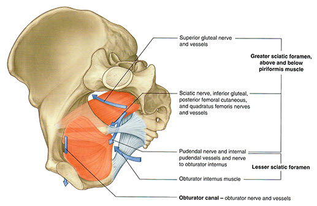
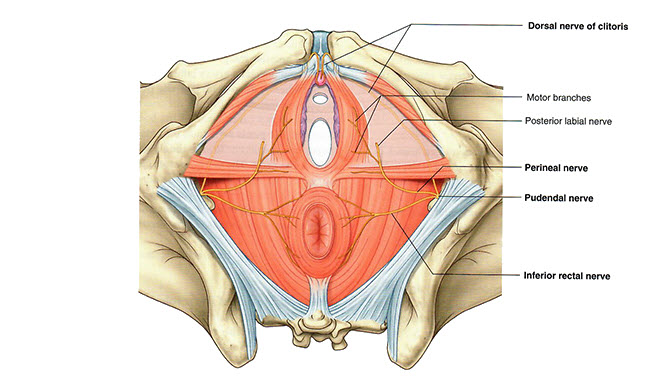

Female Pelvis and Genitalia: Module 1: Page 3 of 7
| Add the pudendal nerve and trace its path from the sacrum to the pelvic diaphragm. You will have to rotate the pelvis in order to see its origin and where it ends in the perineum. | |
|  |
Through what foramen does the pudendal nerve pass in order to reach the perineum? |
|
|
The lessor sciatic foramen. |
|
What are the three divisions of the pudenal nerve? |
|
|
Inferior rectal nerve Perineal nerve Dorsal nerve of the clitoris  |
|
If you were injecting the pudendal nerve for pain control, where would the needle be placed? |
|
|
The needle is placed medial to the ischial tuberosity and into the sacrospinous ligament. See page 491 in the text. Rotate the cadaver so you can see this. |
|